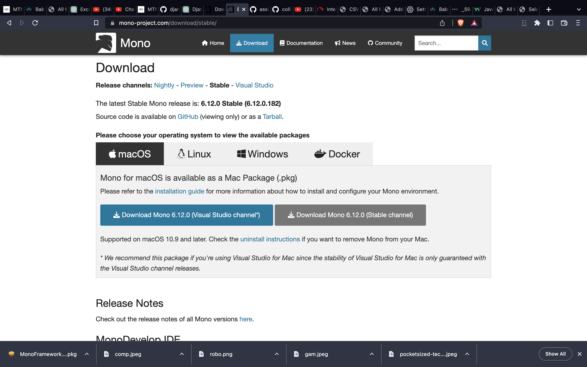

To run .NET frameworks may be quite tidious on a Mac os, this is a detailed process on how to easily run "console" VB.net on your vscode
Configuring VB.Net on MACOS
Install Mono from the website
We shall be using the stable version
Mono Install Mono: You can download the latest version of Mono from the official website and install it on your Mac.
Verify the installation: After installing Mono, open the Terminal and run the command "mono --version" to verify the installation.